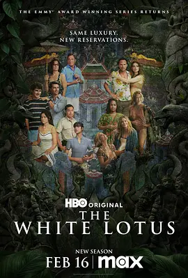

6.8
白莲花度假村 第三季
The White Lotus Season 3
2025
美国
评分 6.8
导演:
麦克·怀特
演员:
莱丝莉·比伯 / 凯莉·库恩 / 沃尔顿·戈金斯 / 莎拉·凯瑟琳·胡克 / 詹森·艾萨克
类型:
剧情,喜剧,悬疑
剧情简介
第三季将视角带到泰国的一处奢华康养度假胜地。这里的空气带着潮湿热意，也带着某种让人卸下心理防线的力量。新抵达的旅客们步入满是木香与微光的大厅时，都被承诺能在这里找回平静。然而，从他们的神情与举止里，已经能察觉各自藏着不同的纠葛：有人试图逃离风暴般的情绪，有人带着未能愈合的伤，有人把旅程视为另一种意义上的重生。酒店的空间静谧而神秘，蜡烛、葫芦形吊灯与治疗室的低语交织成一种迷离氛围。当客人们踏进按摩室、冥想亭或海边木栈道时，那些原本被压在心底的秘密开始松动。看似温柔的仪式，让他们不得不面对自己的恐惧与欲望；偶然的相遇，也轻易牵扯出难以言说的关联。员工们维持着近乎仪式化的专业与微笑，却在暗中观察每位客人身上微妙的变化。夜色笼罩度假村时，氛围变得更为敏感。客人们在酒杯旁卸下伪装，有人因坦白而轻松，也有人因旧事被触及而神经绷紧。伴随灵性探索的，是愈发密集的冲突与怀疑——某些往事不愿被提起，某些行为意外引发连锁反应，而某些人心怀目的，每一步都踩在边界线上。随着时间推进，度假村逐渐像一面镜子，让每个人都照见无法逃避的一面。有的选择直面痛苦，有的试图掩埋，有的最终被情绪或复仇心驱使而走上危险道路。静谧的环境掩盖着暗流，表面平和的体验之下，是不断逼近真相、冲突与死亡的阴影。